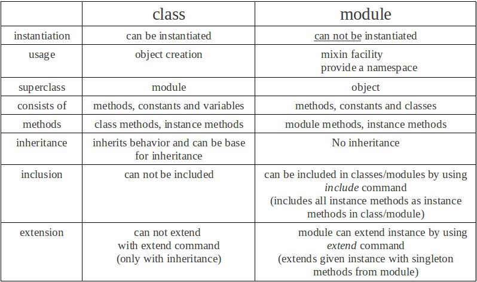

Week 6 Technical Blog
Modules vs Classes
The majority of the learning that I have done with Ruby consists of creating classes that contain variables and methods. Variables are characteristics of the object that I am creating and methods typically perform some action. Variables in classes are setup to change values for a variety of reasons. For example, if we create a sum variable, we would want that variable to equal a different totals when we run our an add method that we created that takes various numbers as input.
Modules are similar to classes in that they both have methods, but modules have constants instead of variables and CANNOT be initalizied. This means they run the exact same way every time you call it. With classes, you can create two different instances of the same class and have those instances do different things, this is not the case with Modules.
So what do we even need modules for if they can’t be initialized? Modules are good for creating static libraries that can be used by other classes. For example, Ruby’s math library is a module. This is because math is done the same way no matter how it is being called. The constant PI in the math class is always 3.14…. There is no method that you can run to change what that value is since it is a constant. Since Ruby classes and only inherit one class, you can use modules to include additional methods and constants in a class.
Lastly, the image on the right side is one I found on stack overflow that provides a great example of some of the differences between modules and classes.